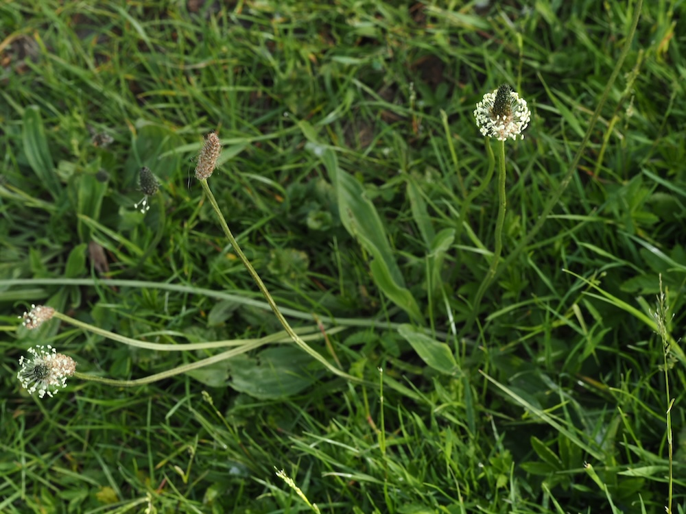

Die Wundpflanze für Wanderer
Hast du schon mal eine Blase, einen Mückenstich oder einen Splitter gehabt? Dann hat dir wahrscheinlich der Spitz-Wegerich schon einmal geholfen — auch wenn du es nicht wusstest. Die Blätter, zwischen den Fingern zerquetscht und auf die Verletzung gepresst, wirken antibakteriell und reduzieren Schwellungen. Wirkstoffe wie Allantoin und Aucubin sind nachweislich heilend. Eine perfekte Wanderfreund-Apotheke direkt am Wegesrand.
„Wegerich“ = der König des Weges
Der altdeutsche Name „Wegerich“ bedeutet „König des Weges“ — und die Pflanze hat sich diesen Titel verdient. Sie wächst nahezu auf jedem getrampelten Boden, von Bauernhofwegen bis Bürgersteigen. Der Trick: Die Blätter liegen flach und sind extrem zäh — Tritte machen ihnen nichts aus. Wo andere Pflanzen längst zerstört wären, gedeiht der Wegerich noch immer.